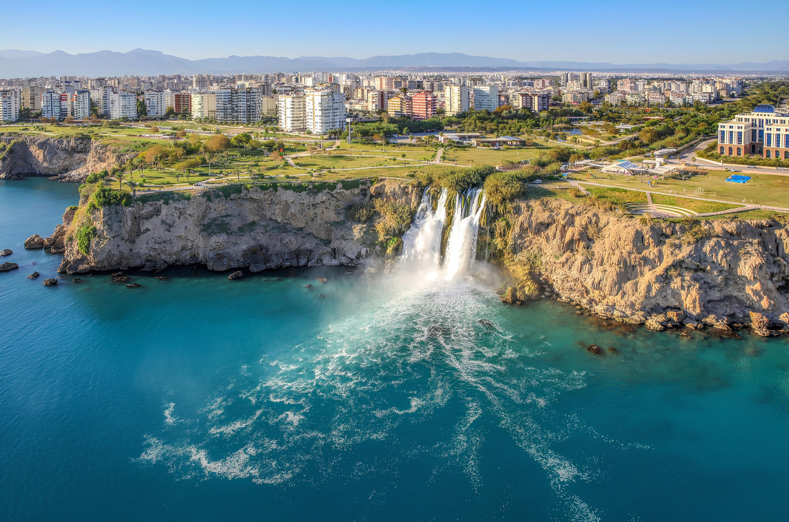
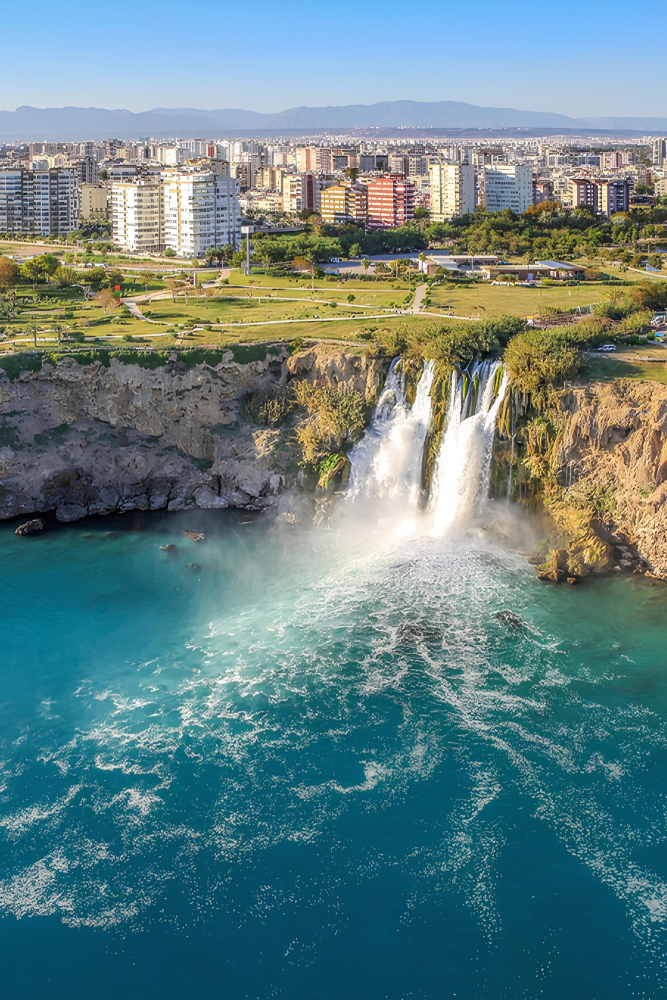
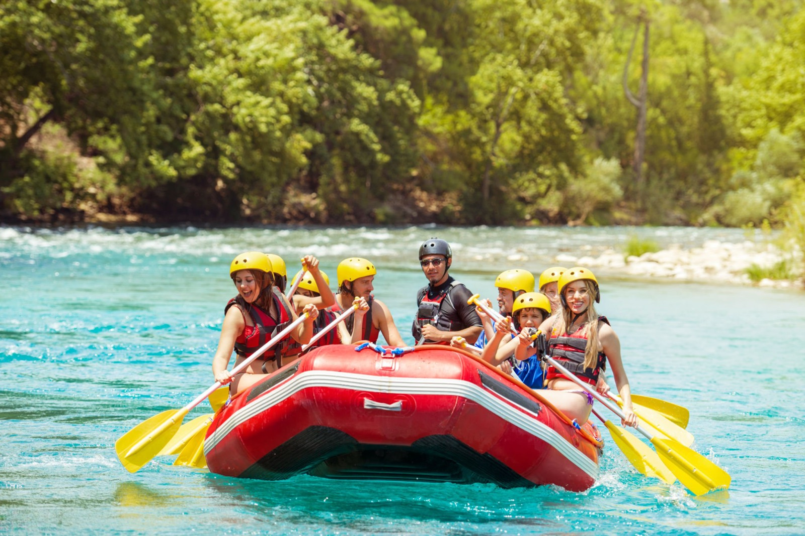

Antalya Şehir Turu
Kaleiçi, Düden Şelalesi ve şehir kıyısını bir tam günde tanımak isteyenler için.
Şehir turu detayları →Antalya tur seçeneklerini tek tek aramak yerine şehir, tekne, doğa, kültür ve macera programlarını aynı rehberde karşılaştırın. Süre, transfer bölgesi ve dahil olan hizmetler seçilen programa göre netleştirilir.

İlk kez gelenler şehir turuyla, deniz odaklı bir gün isteyenler Suluada veya Kemer tekneleriyle, hareket arayanlar rafting ve safari rotalarıyla başlayabilir.

Kaleiçi, Düden Şelalesi ve şehir kıyısını bir tam günde tanımak isteyenler için.
Şehir turu detayları →
Suluada, Adrasan, Kemer ve Düden kıyısı rotalarında yüzme molalı programlar.
Tekne turlarını karşılaştır →
Rafting, buggy, jeep safari, dalış ve yamaç paraşütü seçenekleri.
Günübirlik rotaları gör →Antalya büyük bir turizm bölgesidir; Lara, Kundu, Konyaaltı, Belek, Kemer, Side ve Alanya’dan alınış saatleri aynı değildir. Bir turu değerlendirirken yalnızca başlık ve fiyata değil, transfer kapsamına, gerçek tur süresine, yemek ve giriş ücretlerine de bakmak gerekir.
Şehir ve çevre turlarının çoğu transferlerle birlikte 7–10 saat sürer. Suluada gibi Adrasan’dan başlayan turlarda kara transferi toplam süreyi uzatabilir. Kısa kıyı gezileri ve gün batımı turları genellikle 3–5 saatlik programlardır. Kesin süre, otelinizin bulunduğu bölgeye ve günlük programa göre yazılı olarak paylaşılır.
Tur türüne göre otel transferi, rehberlik, öğle yemeği, tekne yolculuğu veya aktivite ekipmanı dahil olabilir. Müze ve ören yeri girişleri, içecekler, kişisel harcamalar ya da bazı uzak bölge transferleri ayrı ücretlendirilebilir. Col Tur, ödeme öncesinde dahil ve hariç hizmetleri net biçimde teyit eder.
Çocukların yaşına göre Antalya şehir turu, sakin tekne gezileri, Antalya Akvaryum ve tema parkı programları öne çıkar. Rafting, dalış ve yamaç paraşütünde yaş, boy, sağlık ve hava koşulu sınırlamaları olabilir. Rezervasyon talebinde çocukların yaşını belirtmek en uygun programın seçilmesini kolaylaştırır.
Rezervasyon öncesinde en çok merak edilen kısa bilgiler.
Birçok programda belirli Antalya bölgelerinden transfer vardır. Kapsam ve ek ücret, otelin konumuna göre kesin rezervasyondan önce bildirilir.
Başlangıç fiyatları tarih, kapasite, yaş grubu ve transfer bölgesine göre değişebilir. Ödeme öncesinde güncel toplam tutar yazılı olarak teyit edilir.
Müsaitlik varsa bazı turlar aynı gün veya bir gün önce alınabilir. Yaz sezonunda tekne ve popüler aktivite turlarını erken sormak daha güvenlidir.
Sitedeki form önce müsaitlik talebi oluşturur. Müsaitlik, dahil hizmetler ve kesin fiyat netleşmeden ödeme oluşturulmaz.
Her sayfada rotaya özel süre, ulaşım ve seçim önerileri bulunur.